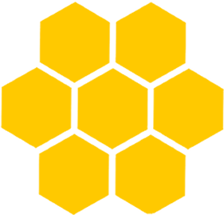
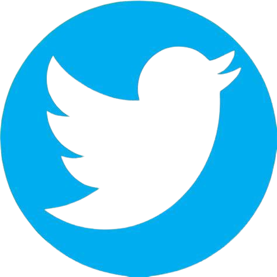

<!DOCTYPE html>
<html lang="pt-BR">
<head>
    <meta charset="UTF-8">
    <meta name="viewport" content="width=device-width, initial-scale=1.0">
    <title>Projeto Agrinho - Apicultura</title>
    <style>
        body {
            font-family: Arial, sans-serif;
        }

        footer {
            background-color: #1e1d35;
            color: rgb(255, 255, 255);
            padding: 5px;
            display: flex;
            justify-content: space-around;
            flex-wrap: wrap;
            border: solid black 3px;
        }

        .footer-section {
            flex: 1;
            margin: 10px;
            min-width: 180px; /* Ajustado para acomodar 5 colunas */
        }

        .footer-section.middle {
            margin: 10px 20px; /* Define um maior espaçamento nas seções do meio */
        }

        .footer-section.right {
            margin-left: auto; /* Alinha à direita */
        }

        .footer-section h4 {
            margin-bottom: 10px;
        }

        .footer-section p, .footer-section ul {
            margin: 0;
            padding: 0;
            line-height: 1.6;
        }

        .footer-section ul {
            list-style-type: none;
        }

        .footer-section ul li {
            margin: 5px 0;
        }

        .footer-section ul li a {
            color: #fff;
            text-decoration: none;
        }

        .footer-section ul li a:hover {
            text-decoration: underline;
        }

        .logo {
            display: flex;
            align-items: center;
            justify-content: center; /* Centraliza horizontalmente as imagens */
            margin-bottom: 10px;
            height: 100px; /* Ajuste conforme necessário */
        }

        .logo img {
            vertical-align: middle;
            margin-right: 10px; /* Espaçamento entre logos */
        }

        .description {
            font-size: 14px;
            line-height: 1.6;
        }

        #LogoSite {
            margin-top: 130px;
            height: 150px;
            width: auto;
        }

        #LogoAgrinho {
            margin-top: 20px;
            height: 200px;
            width: auto;
        }

        .social-buttons {
            margin-top: 10px;
        }

        .social-buttons a {
            display: inline-block;
            margin: 0 5px;
        }


        .social-buttons img {
            width: 30px;
            height: 30px;
            border-radius: 7px;
        }

        
        .btn-topo {
            color: #fff;
            padding: 5px; /* Ajuste do padding para botões menores */
            border-radius: 5px;
            text-decoration: none;
            width: 160px; /* Largura fixa dos botões */
            margin-bottom: 5px; /* Espaçamento entre os botões */
            display: block; /* Para que cada botão ocupe toda a largura disponível */
            font-size: 0.8em; /* Redução do tamanho da fonte */
        }

        .btn-topo:hover {
            color: yellow;
            transition: .3s;
        
        }

        #Atalhos {
            margin-bottom: 20px;
        }
    </style>
</head>
<body>
    <!-- Conteúdo do site aqui -->

    <footer>
        <div class="footer-section">
            <div class="logo">
                
            </div>
        </div>
        <div class="footer-section middle">
            <div class="description">
                <h5><b>No projeto Agrinho deste ano, criamos um site com o tema "Do Campo à Cidade", focado na apicultura,
                    que é a criação de abelhas. O site mostra como as abelhas são importantes tanto no campo quanto na cidade. Lá,
                    você pode aprender como cuidar das colmeias, como o mel é feito e descobrir o papel vital das abelhas na polinização das plantas.
                    Com vídeos e artigos, nosso objetivo é mostrar como a apicultura é essencial para a natureza e para nós.
                    É uma maneira divertida e educativa de entender por que precisamos proteger as abelhas e como elas contribuem para um mundo mais sustentável.</b></h5>
            </div>
        </div>
        <div class="footer-section middle">
            <b><h4>Contato</h4>
            <p>Email: NectarNotes05@gmail.com</p>
            <p>Escola: CCM Unidade Polo</p>
            <p>Endereço: Rua Santos Dumont 1984, Campo Mourão-PR</p></b>
            <div class="social-buttons">
                <a href="https://www.instagram.com" target="_blank"></a>
                <a href="https://www.facebook.com" target="_blank"></a>
                <a href="mailto:NectarNotes05@gmail.com"></a>
                <a href="https://www.twitter.com" target="_blank"></a>
            </div>
        </div>
        <div class="footer-section middle">
                        <!-- Conteúdo da nova seção à direita -->
                        <h4 id="Atalhos">Atalhos</h4>
                        <a href="#topo" class="btn-topo">Voltar ao Topo</a> 
                        <a href="#Topico-1" class="btn-topo">Oque é Apicultura</a> 
                        <a href="#Topico-2" class="btn-topo">Como Criar Abelhas</a>    
                        <a href="#Topico-3" class="btn-topo">Como Extrair o Mel</a>    
                        <a href="#Topico-4" class="btn-topo">Topico Extra</a>             
                    </div>

        </div>
        <div class="footer-section right">
            
    </footer>
</body>
</html>
